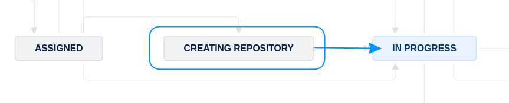

Creating a repository and running pipeline#
Warning
In some instances, somebody else has already created a repository. Always check first if the Bitbucket short name is already filled out. If yes, skip this section and go to Collecting information!
Creating a repository#
start by creating a repository using the import method
copy-paste from this URL to the URL field (this is also available in the Jira dropdown “Shortcuts”)
https://github.com/AEADataEditor/replication-template
the repository name should be the name of the JIRA issue, in lower case (e.g.,
aearep-123)Be sure that
aeaverificationis always the “owner” of the report on Bitbucket.The Project should be the abbreviation of the journal (e.g. “JEP”)
Keep the other settings (in particular, keep this a private repository).
Click
Import RepositoryKeep this tab open!

We have now created a Bitbucket repo named something like
aearep-123that has been populated with the latest version of the LDI replication template documents!
Ingesting author materials#
We will now ingest the authors’ materials, and run a few statistics. Typically, the materials will be on a (private) openICPSR repository. Sometimes, the materials will be at Dataverse, Zenodo, or elsewhere.
If at openICPSR, the fields
Replication package URL,openICPSR alternate URL, andopenICPSR Project Numberwill be filled.If at Zenodo or Dataverse, the
Replication package URLwill have the DOI of the replication package,openICPSR alternate URLandopenICPSR Project Numberwill be empty.
Note
This currently works reliably only for openICPSR. This documentation will be updated when it works for Dataverse and Zenodo as well.
Inspect the deposit#
First, click on the openICPSR alternate URL URL (or Replication package URL if it contains a DOI and the other fields are empty). Inspect the deposit.
on openICPSR, you will see the size of the deposit on the right:

on Zenodo, you will see the size of the deposit on the left, below the “featured” file:

The information may be in different locations at other repositories.
Note
Make a note of the size of the deposit!
Running the pipeline#
You will now run what is called a Bitbucket Pipeline. Similar tools on other sites might be called Continuous integration, Github Actions, etc. If you have encountered these before, this will not be news for you, but it isn’t hard even when this new.
First, in the repository you just created, navigate to the
Pipelinestab

Because this is new, you will see the “Run initial pipeline” page. Click on
Run initial pipeline.

You will now need to select a “pipeline” to run.

Note
This is where the information about the size of the deposit matters! Choose the option that best matches the size of the deposit.
If the deposit is less than 3 GB…
Choose “
1-populate from ICPSR” (might change in the future), and fill in the ID for the relevant source of the replication package (here: openICPSR ID =123456), and hitRun.

If the deposit is more than 3 GB…
Choose “
w-big populate from ICPSR” (might change in the future), and fill in the ID for the relevant source of the replication package (here: openICPSR ID =123456), and hitRun.

Note that if you choose this pipeline, certain information is not generated (Stata scan, R package scan), and you may need to augment these manually. Try to avoid this pipeline if possible, and make a note in the Jira comments if you had to run this.
Monitoring the pipeline#
Your pipeline will start, working through various steps. This might take a while! Do the next step (Collecting Information) then come back here.

Once your pipeline is done, check that it is green.
If for some reason, it fails, the logs are available for your supervisor to inspect, and to help you. Check out the possible fixes below. You, or the person assigned to
Part B, may then need to do the manual steps later.

Possible causes#
Memory or CPU usage to high#

If your pipeline fails in the Stata step, click on the failed step, and scroll to the error message. If you see this:
./automations/10_run_stata_scanner.sh: line 64: 122 Killed stata-mp -b do ../PII_stata_scan.do
It is likely that the PII scan failed because the in-memory dataset is too large (too much memory was run, and the pipeline was killed). Try running the pipeline again with the “w-big populate from ICPSR” (see above).
Next step#
